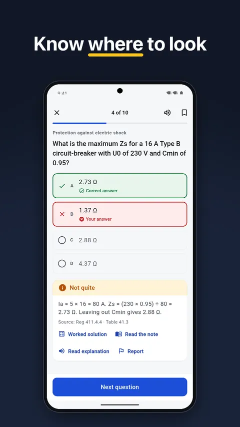
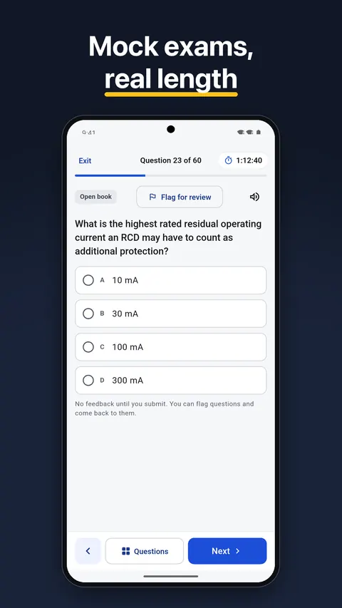

Not a government app. Sparkwise is an independent study app made by Kodfu Bilisim. It is not affiliated with or endorsed by the IET, BSI, City & Guilds, ECS or JIB. It does not contain the real exam questions and never reproduces BS 7671 text.
RCD protection explained: where, which type and how to test
Residual current devices come up in almost every part of the 18th Edition: fault protection on TT systems, additional protection for socket-outlets, the choice of RCD type, and the verification tests in Part 6. This guide pulls the pieces together: what an RCD does, where 30 mA additional protection is required, how Types AC, A, F and B differ, and what the test results should look like.
This page is our own explanation, not the text of BS 7671. Check the exact wording, exceptions and notes in your own copy of BS 7671:2018+A4:2026.
On this page
What an RCD does (and does not do)
An RCD compares the current flowing out on the line conductor(s) with the current coming back on the neutral. In a healthy circuit they balance. If some current leaks to earth, for example through a damaged cable, a faulty appliance or a person, the difference (the residual current) is detected, and once it reaches the device's operating level the RCD disconnects the circuit.
Two limits are worth fixing in your head. First, an RCD on its own does not protect against overload or short circuit between line and neutral: that is the job of a fuse or circuit-breaker, or of the overcurrent part of an RCBO. Second, an RCD cannot detect a shock between line and neutral, because the current still balances. That is why BS 7671 treats a 30 mA RCD as additional protection, never as the only measure against electric shock.
Three jobs an RCD can do
| Role | Typical rating | Where to look in BS 7671 |
|---|---|---|
| Fault protection (automatic disconnection), especially on TT systems where the earth fault current is too small for an overcurrent device | Chosen so that RA × IΔn ≤ 50 V; often 30 mA or 100 mA | Chapter 41: 411.4.204, 411.5 (TT), 531.2 |
| Additional protection against shock if other measures fail or a user is careless | Not exceeding 30 mA | 415.1 and 411.3.3, plus Part 7 locations |
| Protection against fire in certain locations | Not exceeding 300 mA | 422.3.9 |
For the TT calculation, see the worked example in our earthing systems guide.
Where 30 mA additional protection is required
The headline requirement is Regulation 411.3.3. In AC systems, additional protection by an RCD with a rated residual operating current not exceeding 30 mA is required for:
- socket-outlets rated up to 32 A used by ordinary persons or children (Part 2 explains the capability codes used in the regulation);
- socket-outlets rated up to 32 A in other locations;
- mobile equipment rated up to 32 A for use outdoors.
Only the second item, socket-outlets in other locations, can be left without RCD protection, and only on the strength of a documented risk assessment made with a skilled person (electrically) and attached to the electrical installation certificate. A note to the regulation recommends RCD protection of all socket-outlets anyway. The requirement does not apply to FELV or reduced low voltage systems (411.7 and 411.8), and it applies to socket-outlets up to 32 A whether they are single-phase or three-phase, so a 32 A industrial socket-outlet is in scope.
Several other regulations also call for 30 mA additional protection. In your copy, look up:
- 411.3.4 for AC final circuits supplying luminaires in domestic (household) premises;
- 522.6.202 and 522.6.203 for cables concealed in walls or partitions at a depth of less than 50 mm that are not otherwise mechanically protected or earthed;
- Section 701 (bathrooms) and the other Part 7 special locations, many of which set their own RCD conditions.
RCD types: AC, A, F and B
Modern equipment rarely leaks a clean sine wave. Switch-mode power supplies, LED drivers, induction hobs, variable-speed drives, EV chargers and inverters can produce pulsating or smooth DC residual currents, and a basic RCD may not respond to them correctly. Regulation 531.3.3 therefore requires the RCD type to be chosen to suit the residual current the equipment can produce.
| Type | Responds to | Typical use |
|---|---|---|
| AC | Sinusoidal AC residual current only | Since A2:2022, only fixed equipment where the load current is known to contain no DC components |
| A | As AC, plus pulsating DC residual current | General circuits with single-phase electronic loads, such as most domestic socket-outlet and lighting circuits |
| F | As A, plus composite (mixed-frequency) residual currents | Single-phase equipment with frequency inverters, such as some washing machines, heat pumps and pumps |
| B | As F, plus AC up to 1 kHz and smooth DC | Three-phase electronic equipment, some EV chargers and PV inverters (check the manufacturer's instructions) |
The change at A2:2022 matters for both the exam and the job: the 2018 text allowed Type AC for general purposes, but now Type AC is limited to fixed equipment with no DC components in the load current. Amendment 4 adds a note about RCDs in series: each RCD in the chain must suit the residual current expected downstream, so a Type AC device upstream of a Type A, F or B device is a problem. More in our Amendment 4 summary.
Avoiding unwanted tripping
Every piece of electronic equipment leaks a little protective conductor current in normal use. Put too many loads behind one 30 mA RCD and the total can approach the trip level, so the device trips with no fault present. BS 7671 deals with this in two places: Regulation 314.1(iv) asks you to divide an installation into circuits so as to reduce unwanted RCD tripping caused by excessive protective conductor currents, and Regulation 531.3.2 asks for RCDs to be selected and erected to limit that risk, for example by giving circuits their own RCDs or using RCBOs.
Testing RCDs: currents and times
A2:2022 simplified RCD testing for initial verification, and the changes still apply under A4. The requirements sit in the notes to Regulation 643.7.1 (fault protection) and 643.8 (additional protection):
| Item | Current position |
|---|---|
| Test current | An AC test at the rated residual operating current (IΔn), whatever the RCD type |
| General (non-delay) RCD | Maximum operating time 300 ms |
| S-type (time-delayed) RCD | Between 130 ms and 500 ms; not used for additional protection |
| 5 × IΔn test | No longer required; optional, and a 40 ms result is a reasonable expectation for a 30 mA device |
| ½ × IΔn test | Optional, useful for fault finding (the RCD should not trip) |
| Testing at 0° and 180° | Not required |
The test button checks only the mechanism, not the trip time, and is the check householders are told to carry out every six months.
Worked example: reading a test result
You are testing a new domestic installation. The socket-outlet circuits are on 30 mA Type A RCBOs and the shower circuit has its own 30 mA RCBO. Your results at IΔn:
| Circuit | Device | Result at IΔn | Outcome |
|---|---|---|---|
| Ring final, kitchen | 30 mA Type A RCBO | 24 ms | Satisfactory (≤ 300 ms) |
| Shower | 30 mA Type A RCBO | 31 ms | Satisfactory (≤ 300 ms) |
| Garage sub-main | 100 mA S-type RCD | 210 ms | Satisfactory (130–500 ms), but it cannot count as additional protection |
| Garage socket-outlets | 30 mA Type AC RCBO | 28 ms | Trips in time, but Type AC is not suitable for general socket-outlets: replace with Type A or better |
The last row is the trap: a fast trip time does not make the wrong RCD type compliant. Selection (531.3.3) and verification (643) are separate checks.
Exam tips for 2382-26
- Tab 411.3.3, 411.3.4, 415.1, 522.6.202/203, 531.3.3 and 643.8. Many questions are answered by finding one of these.
- Read the number in the question: 30 mA points to additional protection, 300 mA to fire protection, and an S-type device can never provide additional protection.
- Watch for "32 A": sockets above 32 A are outside 411.3.3; sockets up to 32 A, single- or three-phase, are inside it.
- Questions about the risk-assessment exception expect you to know it covers only socket-outlets in "other locations".
Practise RCD questions. Try the free protection against electric shock practice questions, then protective devices, earthing and bonding and inspection and testing. For the exam itself, read our 18th Edition exam guide.
FAQ
Do all socket-outlets need a 30 mA RCD?
Socket-outlets rated up to 32 A need 30 mA additional protection under Regulation 411.3.3. The only exception is for socket-outlets in "other locations" (not those used by ordinary persons or children), and only with a documented risk assessment made with a skilled person and attached to the certificate. Sockets above 32 A are outside this regulation, though other rules may apply.
Can I still fit Type AC RCDs?
Only to serve fixed equipment where the load current is known to contain no DC components, which has been the rule since A2:2022. For general socket-outlet and lighting circuits with electronic loads, Type A is the usual minimum, with Type F or B where the equipment needs it.
Is the 5 × IΔn RCD test still required?
No. Since A2:2022 the required test is an AC test at the rated residual operating current, with a maximum of 300 ms for a general non-delay RCD. Tests at ½ × IΔn and 5 × IΔn are optional and can help with fault finding.
What is the difference between an RCD, an RCCB and an RCBO?
RCD is the general name. An RCCB is a residual current circuit-breaker without overcurrent protection, so it needs a fuse or circuit-breaker as well. An RCBO combines residual current and overcurrent protection in one device, which lets each circuit have its own RCD and reduces unwanted tripping.
Will an RCD protect someone who touches line and neutral?
No. Current through the body from line to neutral is balanced, so the RCD sees no residual current. That is why a 30 mA RCD is additional protection, alongside basic protection (insulation and enclosures) and fault protection.
Practise both exams in the Sparkwise app
927 original questions across every Part of BS 7671:2018+A4:2026 and every ECS HS&E syllabus area, timed mock exams in the real format, worked solutions for calculations and explanations that show where to look in the book.
- 18th Edition: 538 questions, 60-question mock exams in 2 hours, a maximum Zs calculator and a guide to Amendment 4
- ECS HS&E: 389 questions and 50-question mock tests in 30 minutes
- Works offline. No ads, no account, no data collected.



Free: two full topics in each exam, three questions in every other topic, one full mock exam for each exam, the maximum Zs calculator and checklists.
Sparkwise Pro, £12.99 one-off: every question, every mock exam and every worked solution, for both exams. No subscription.
Android now; iPhone version not yet available. Sparkwise helps you prepare; it cannot promise a pass.
Official sources
Check these public pages before you book, apply or claim.
- BS 7671 18th Edition wiring regulations (IET)
- Requirements for Electrical Installations (2382) (City & Guilds)
- Health, Safety & Environmental Assessment (ECS, run by the JIB)
- Electrical safety at work (Health and Safety Executive (HSE))
- The Electricity at Work Regulations 1989 (legislation.gov.uk)
Exam details can change. Check with the awarding body or your exam centre before you book, and always check real installations against your own copy of BS 7671.